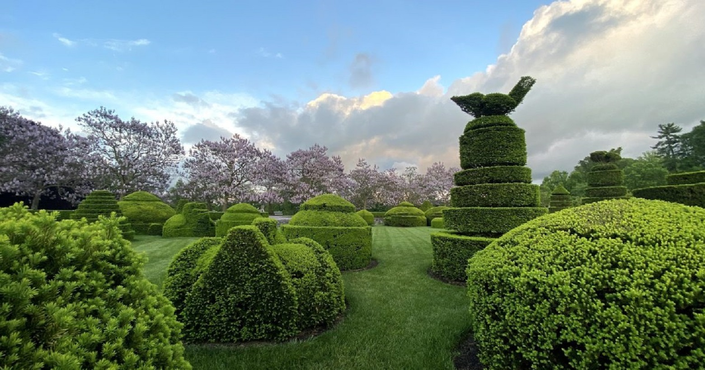
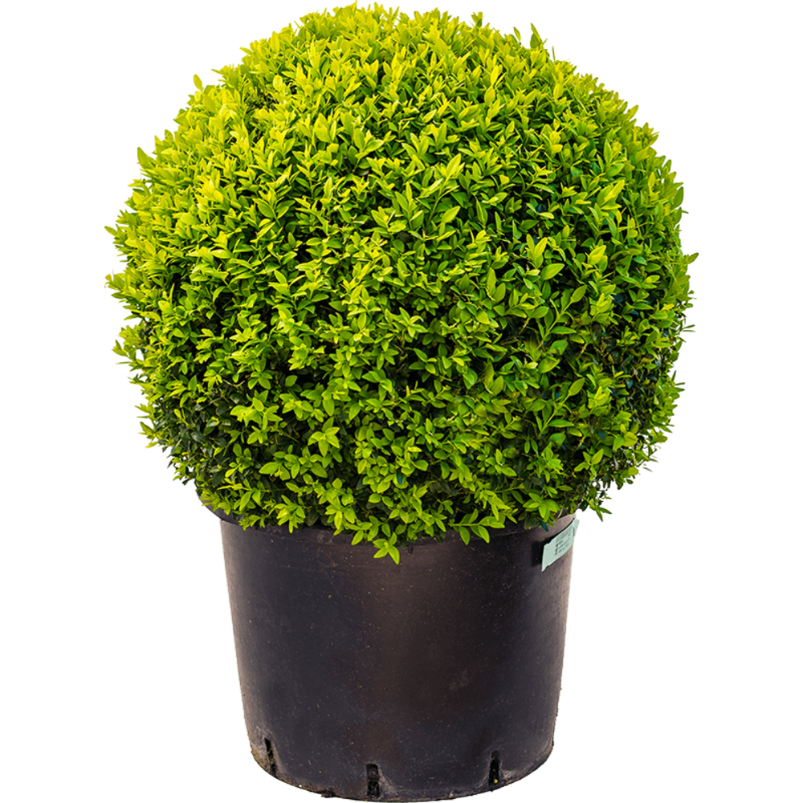
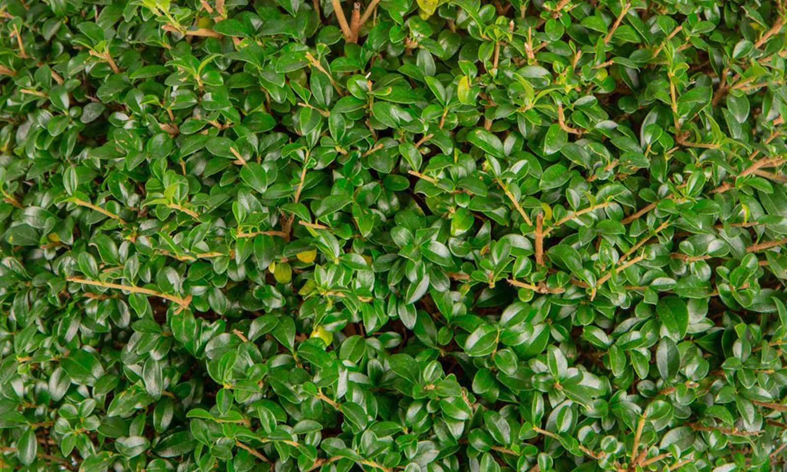
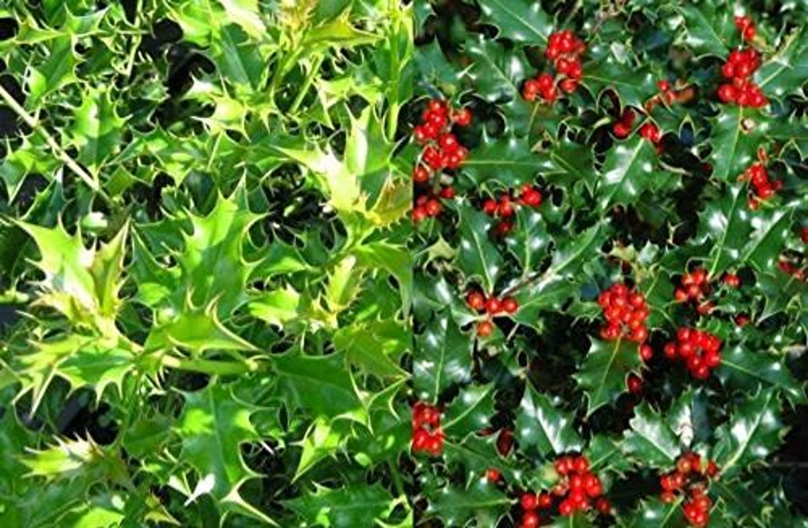
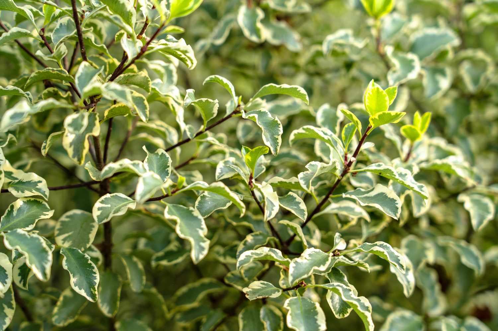
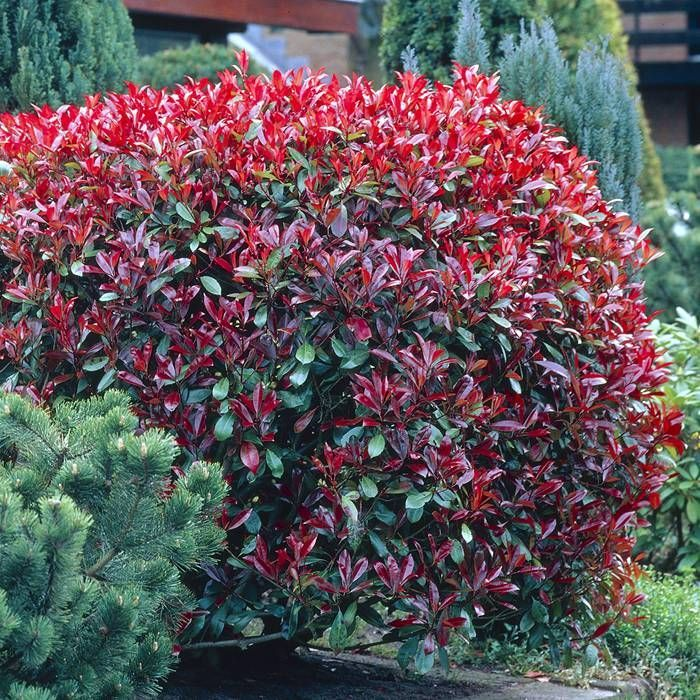
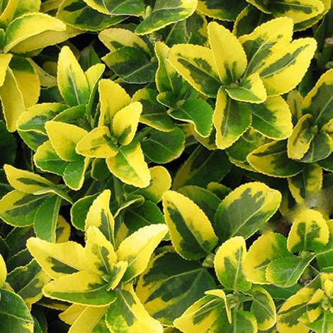
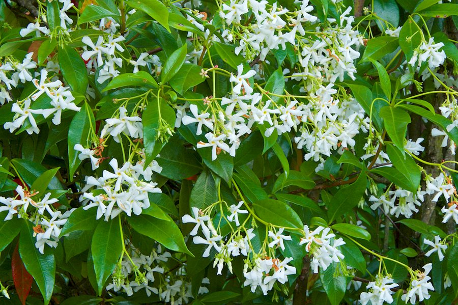

Topiary is the horticultural practice of training perennial plants by clipping the foliage and twigs of trees, shrubs and subshrubs to develop and maintain clearly defined shapes,[1] whether geometric or fanciful. The term also refers to plants which have been shaped in this way. As an art form it is a type of living sculpture. The word derives from the Latin word for an ornamental landscape gardener, topiarius, a creator of topia or "places", a Greek word that Romans also applied to fictive indoor landscapes executed in fresco. The plants used in topiary are evergreen, mostly woody, have small leaves or needles, produce dense foliage, and have compact and/or columnar (e.g., fastigiate) growth habits. Common species chosen for topiary include cultivars of European box (Buxus sempervirens), arborvitae (Thuja species), bay laurel (Laurus nobilis), holly (Ilex species), myrtle (Eugenia or Myrtus species), yew (Taxus species), and privet (Ligustrum species).[2] Shaped wire cages are sometimes employed in modern topiary to guide untutored shears, but traditional topiary depends on patience and a steady hand; small-leaved ivy can be used to cover a cage and give the look of topiary in a few months. The hedge is a simple form of topiary used to create boundaries, walls or screens.
The best plants for topiary that will add year-round structure, form and contrast to your garden scheme

The best plants for topiary include evergreens and semi-evergreens that will offer interest all through the year. The winter frosts or a dusting of snow only enhance plants for topiary and their forms are wonderful foils against the billowing mass of spring and summer flowers or fall leaves. Small-leaved shrubs, such as box and yew, are best to keep the shape defined. Complicated shapes can take many years to fill out and need patient training so will form part of your long-term garden ideas. Many of these plants can be bought ready-formed and may have taken between three and eight years to train. Developing topiary from young plants is a long-term commitment but you can also start with mature specimens and can suit formal garden design to cottage style, or even interspersed among naturalistic planting.
Beyond the usual green box, yew and privet you can shape a wide array of evergreen shrubs and evergreen trees, including fruiting and flowering shrubs. Think of variegated and silver foliage, as well as ornamental and productive specimens. The best plants trialled by the RHS as alternatives to box are mainly corokia and podocarpus. Corokia grow a bit faster but when established they both look very dense and clip very well,' says Alessandra Sana, horticulturist at RHS Garden Wisley. Variegated plants such as Euonymus fortunei ‘Emerald ‘n’ Gold’ or Elaeagnus ebbingei 'Gilt Edge’ will have you going for gold. Ready-made shapes can be purchased from specialist nurseries and garden centers, or have a go yourself.

Small leaves and dense texture make box the classic choice as a plant for topiary. Box is a surface rooter and likes a cool, well-aerated rooting area. The ideal site is deep, fertile, well-drained soil in a sheltered, partly shaded spot. However, it is a very adaptable plant and will grow in most situations apart from waterlogged soil. Box is also well suited to container gardening ideas. Water well until the root is established. Fertilize lightly in spring, prune in June and tidy in October. Never clip box in hot sunlight as it may scorch and burn. Water potted box regularly in summer. Feeding is essential for healthy growth in containers but not strictly necessary in the ground. Always ensure your shears are disinfected and clear away clippings for optimum health of the plant.

This hardy evergreen is not susceptible to the pests and diseases that box plants can get. Long pliable stems make it particularly useful for winding onto frames. Delavay privet is a compact shrub with ovate dark green leaves, panicles of small white flowers in early summer, followed by blue-black berries. It grows in sun or part shade in any moist, well-drained soil and tolerates most soil types and all aspects, and is also drought tolerant. Useful as a fast-growing hedge of topiary, you may need to trim it three times a year.

With glossy leaves and berries, English holly is one of the best plants for topiary and has the advantage that it is slow-growing and only needs trimming occasionally. A pair of standard lollipops by a door works well, as does placing topiary holly in a parterre garden in a sea of lavender. And who can resist the beauty of cloud-pruned Japanese holly with their large curved shapes that appear to float out from the stems as a Japanese garden idea? Holly does best with sunlight in moist, rich soil. Keep in mind the effect is a little looser than box or yew.

This neat, evergreen shrub needs a sheltered, sunny position in any well-drained soil. There are different foliage colors to choose from with pittosporum. Select the small leaved types as plants for topiary and more vigorous than box, you will need to clip these twice a year, in spring and fall, to keep the shapes neat. Pittosporum is particularly useful for mounds and spheres. Fall and spring are the best times to plant these shrubs. 'Pittosporum are among the plants for topiary that grow quickly, and it is good practice to trim them often in order to avoid a patchy effect,' says Alessandra Sana.

These small-leafed shrubs and trees make ideal privacy hedges and attractive standard lollipops with their bright red glossy leaf tips, as they respond well to pruning as plants for topiary. They tolerate most soil types, apart from heavy clay or being waterlogged, and prefer a full sun position. Once established they rarely need watering and tolerate mild drought conditions.

This is a slow-growing compact evergreen shrub that tends to be pest and disease-free. It clips well into simple geometric shapes and can also be used as a hedging and groundcover or among plants for pots all year round. Euonymus ‘Emerald n Gold’ grows in full sun for the brightest foliage, but can also grow in shade, in sheltered and exposed sites in average, medium moisture, well-drained soil. Euonymus also comes in a number of different varieties with shades from grey-green to yellow-green.

Among the best shrubs for shade, camellias are also excellent as plants for topiary. Boasting dark glossy green leaves, they also have the added bonus of showy flowers. As they re-sprout from bare wood they can be used for topiary and hedging. Select a slow-growing variety to cut down on the amount of clipping needed. For a standard or lollipop, look for a nice strong central trunk and remove side shoots until you have the head forming at the top, which can take a few seasons, so don’t be too harsh. Learn how to grow camellias and in order to maintain their shape, how to prune camellias for the best results.

With their architectural, narrow, leathery aromatic leaves, which are often used in cooking, bay trees are equally at home as statement topiary potted standards flanking a door, or in productive gardens surrounded by herbs. Ideal in English garden schemes, grow these topiary plants in fertile, well-drained soil in full sun. Small star-shaped flowers are followed by purple-black fruit on female plants. Prune bay with secateurs so as not to damage the leaves, in early spring or summer..

Ideal for a quicker result, star jasmine is a vigorous fast growing flowering vine that will twine through a frame, and also provide fragrant flowers in summer and leaves that turn red in winter. It is easy to learn how to grow jasmine. It needs a sunny, warm sheltered spot in full sun to part shade, with fertile, well-drained soil. Protect the plants from cold, drying winds and they need a lot of light to flower well. They are best planted in the spring and will spend the first year establishing a good root system. As well as pruning into topiary shapes, this night-scented plant will add a wonderful fragrance to the evening garden.
Send mail to get This Service .....